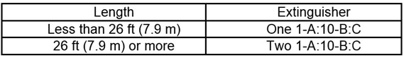

19.F Launches, Motorboats and Skiffs
19.F.01–19.F.06
19.F.01 Crew requirements.
- In the following circumstances a qualified employee shall be assigned to assist with deck duties:
- When extended trips including overnight trips are made from the work site;
- When conditions of navigation make it hazardous for an operator to leave the wheel while underway;
- When operations being performed, other than tying-in, require the handling of lines;
- When operating at night or during inclement weather;
- When towing; or
- While a vessel is transporting crew or passengers.
- A qualified employee is any individual who has established, to the satisfaction of the operator of the vessel that he/she is physically and mentally capable of adequately performing the deck duties to which he/she may be assigned.
19.F.02 Personnel and cargo requirements.
- The maximum number of personnel and weight that can safely be transported shall be posted on all launches, motorboats, and skiffs. The number of personnel (including crew) shall not exceed the number of PFDs aboard.
- Each boat shall have sufficient room, freeboard, and stability to safely carry the cargo and number of persons allowed with consideration given to the weather and water conditions in which it will be operated.
- Launches, motorboats and skiffs less than 20 ft (6 m) in length shall meet 33 CFR 183 requiring level floatation after flooding or swamping.
- All open cabin launches or motorboats shall be equipped with "kill (dead man) switches".
19.F.03 Fire protection.
- The minimum number and rating of fire extinguishers that shall be carried on all launches and motorboats, including outboards, are shown in Table 19-1:
- All launches and motorboats having gasoline or liquid petroleum gas power plants or equipment in cabins, compartments, or confined spaces shall be equipped with a built-in automatic CO2 fire extinguishing system meeting the requirements of 46 CFR 25.30-15.
TABLE 19-1
Fire Extinguisher Requirements for Launches/Motorboats

19.F.04 Float Plans. Float plans shall be prepared by the operator of a launch or motorboat when engaged in surveying, patrolling, or inspection activities that are remote and are expected to take longer than 4 hours or when the operator is traveling alone. The plan shall be filed with the boat operator's supervisor and shall contain the following, as a minimum:
- Vessel information (make/model or local identifier);
- Personnel on-board;
- Activity to be performed;
- Expected time of departure, route, and time of return;
- Means of communication (adequate means of communication shall be provided).
19.F.05 All motorboat operators shall complete and document the following training:
- A boating safety course meeting the criteria of the USCG Auxiliary, National Association of Safe Boating Law Administrators (NASBLA), or equivalent;
- Motorboat handling training, based on the type of boats they will operate, provided by qualified instructors (in-house or other). Operators must pass a written and operational test;
- Current USCG licensed personnel are exempt from the boating safety training, but they shall complete the written exam and operational test;
- Government employees shall complete a USACE-approved 24-hour initial boating safety course and refresher as prescribed in ER 385-1-91.
19.F.06 USACE launches, motorboats, skiffs and boat trailers shall be inspected, tested, repaired and maintained in accordance with ER 385-1-91 and the manufacturer's recommendations.
- Inspection shall be conducted by a qualified person (QP), documented and retained for a period of 5 years.
- Boats and boat trailers shall be inspected:
- Prior to each use, and
- Periodically, in accordance with manufacturer's recommendations and USACE requirements.
{kind=link}